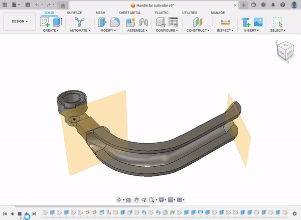
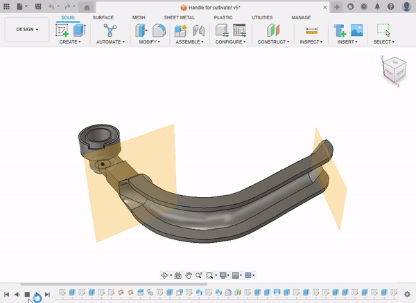
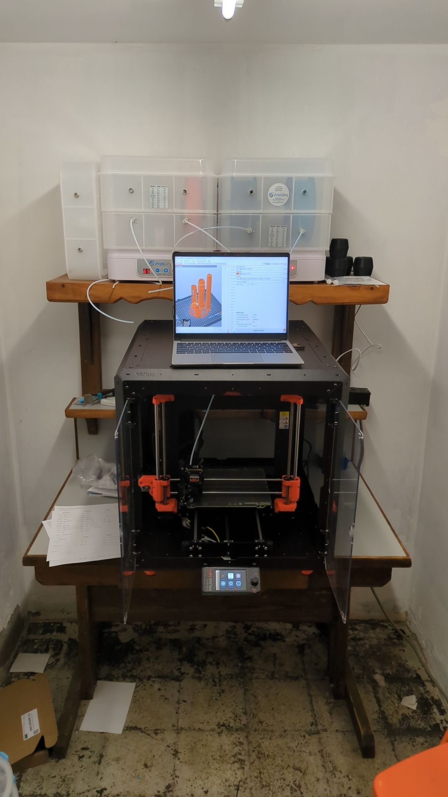
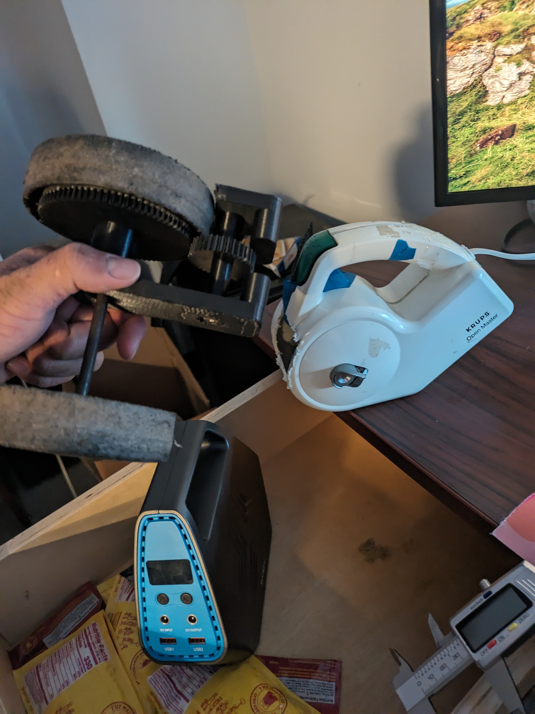
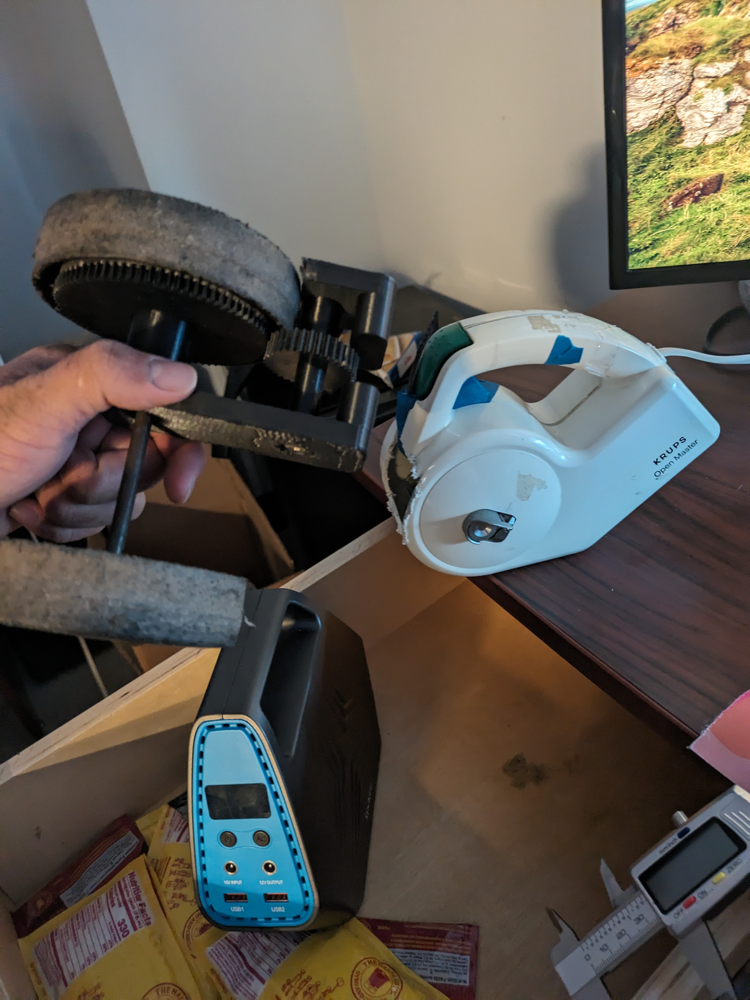
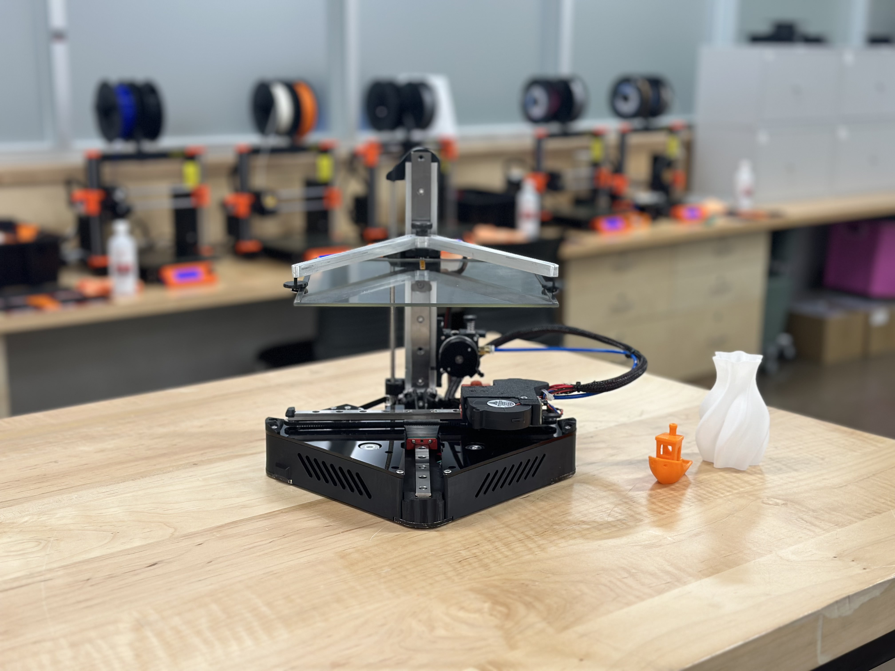
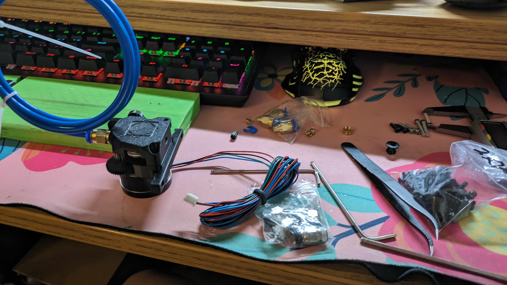

3d Printing | Tool Library
Grant Writing

- Designed a logic model canvas to clearly articulate all the resources we have access to , to the activities, to the outcomes, and all the stages between
- Made design choices for a printer that is likely mean to be used for home repair
- Refrence available upon request
 

Tool libary 3d printing, In Person
Workshop
Meant to be a series of workshops, there were a few barriers that stopped up from proceeding
First the grant writing didn't include funding for workshops, when the 3d printer is already incurring costs to the Tool Library
Secondly, the Tool Library workshops were meant to teach each people compantancy in the 3d printer. But without the space or curriculum, there were barriers to start it.
With the follow up grant, I am reaching out to the Foundary, which is a makerspace with the facilities and the knowhow to teach our commmunity to 3d print
Printer Build
Over a couple of weekends, me, one of my residents, and in-store workstudy students took a the 3d printer system and built it.
It includes 2 large dryer boxes, so up to 4 different materials can be dry and ready to print with
Includes an encloser that is also air filtered, to ensure safety of the people working in the enclosed basement
Presonal 3d printing Projects
Upcycled GoCart
 

I'm taking spare parts from projects I've worked on, and turning them into a go cart, that sits flush in my car trunk.
Positron
 I'm building a folding 3d printer, to bring to the Tool Library's Dare to repair event, which is a community event to fix broken items, that sets up in a different location every time.